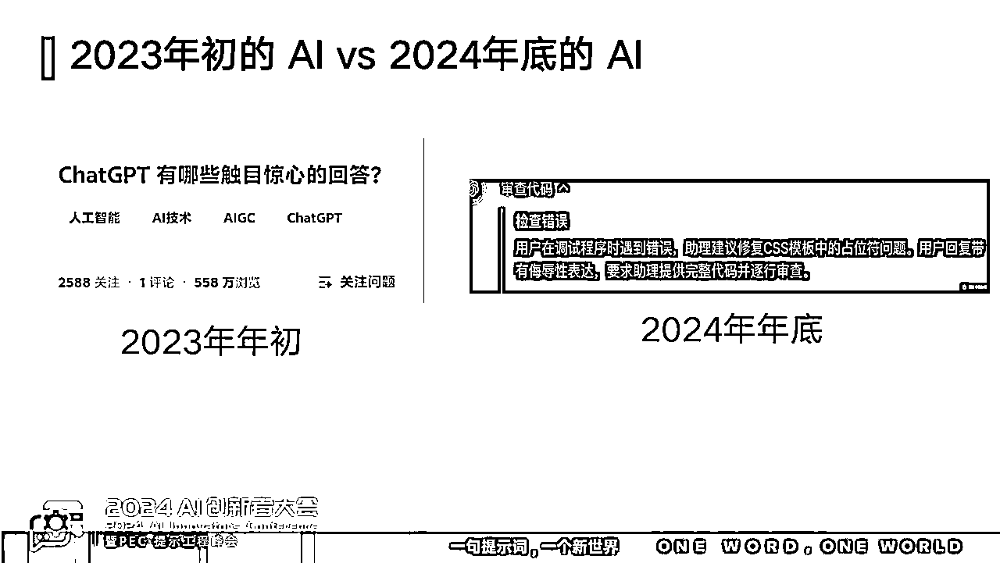
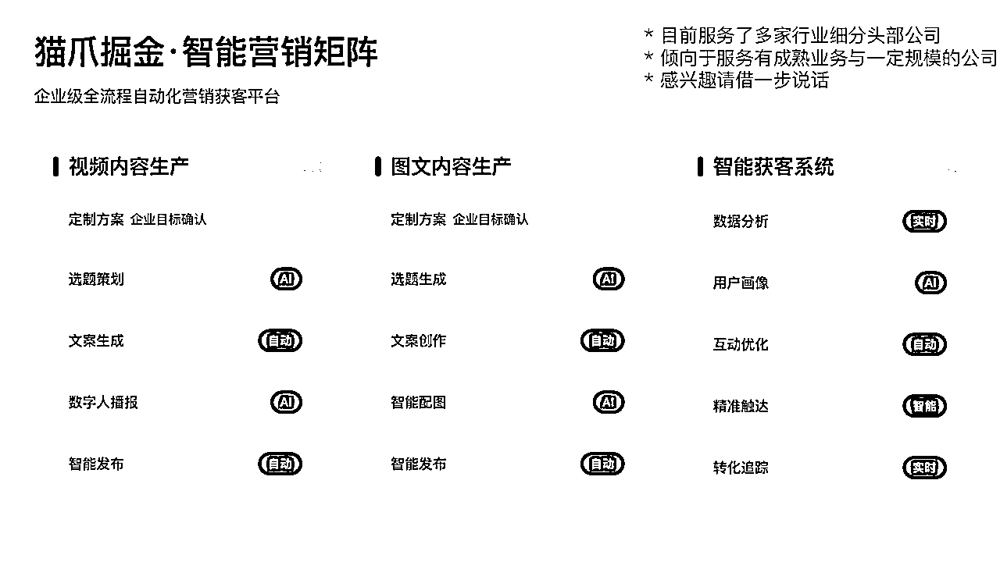
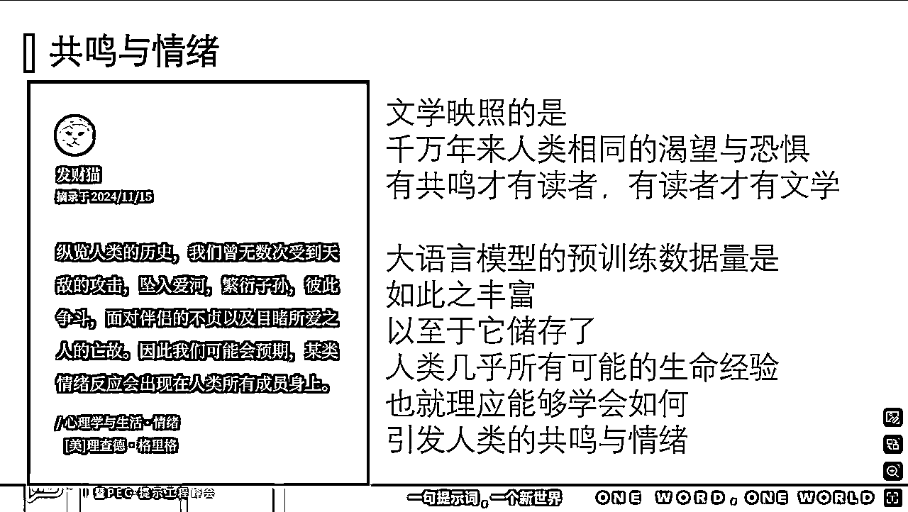
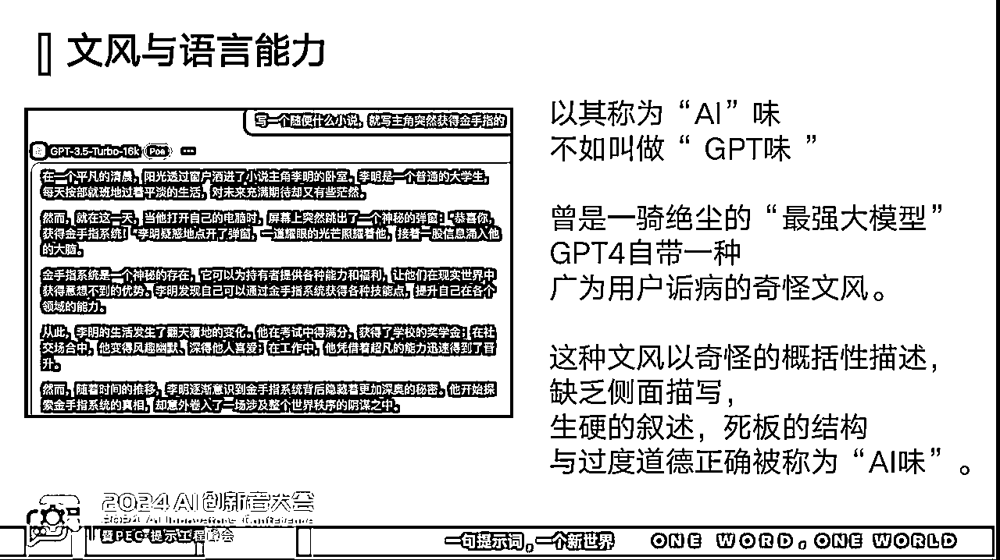

来源：https://richcatai.feishu.cn/docx/B5zvdhMwWoGodLxsytQcpb6snje
这是Prompt Engineering Conference, 世界提示词工程大会北京场的一篇演讲稿，它是基于实际的商业需求和实践诞生的，帮某大厂和我自己赚了很多的钱。全文1.2万字左右，花费了我很多的心血，祝你阅读愉快。
大家好，我是财猫。很荣幸能再次站在这里，作为去年的第一届pec大会其实我也在这里。今天我想和大家聊聊"如何用AI写出比人更好的文字"这个话题。
先简单介绍下我自己。我的本名是陈颢鹏，网上大家都叫我陈财猫。2023年，我主要活跃在提示词领域。在大模型方兴未艾的去年2月，我提出了一个叫BROKE的提示词框架，这可能是最早的一批框架之一。当时只是随手发到网上，没想到竟然火了，这也成了我梦开始的地方。
后来，我在浓厚的玩心下继续开始了各种各样的创造：和香港科技大学的做自然语言处理的友友一起写了一本Prompt Engineering 教材，用 prompt 开发的 AI 游戏“人生重开模拟器”上了github trending，为了悼念自己去世宠物而做的gpts进入了全球前100等等。
今年，也就是2024年，我获得了投资，开始创业，决定潜心深耕 AI + 内容创作赛道。这也是我认为的现阶段最好的 AI 赛道。
今天的分享分为 5 个部分：
第一，我会讲讲我基于逻辑的推演与决策：为什么我认为AI+内容创作可能是现阶段最好的赛道。
第二，我要讲讲我在用 AI 写什么。光在这儿说是不够的，我得讲讲我做出来什么东西，拿到什么结果，才比较有说服力。
第三，在写出跟人一样“好”的文字之前，我们需要定义一下什么样的文字是好的。接下来才是向这个方向努力。
第四部分则是我在 AI 创作上的实操，我会讲讲我对于大语言模型的理解，以及在这种理解的基础上的一些实操，这些理论和实践的结果就是写出来的文字。
最后是一些小想法，其实AI在内容创作上也遭受了蛮多非议，有人会说AI写出来的东西是没有灵魂的，我在这个问题上有一些其他的看法。
首先是“为什么 AI + 内容创作可能是现在最好的赛道”。
如果要让我对今年的大模型讲一句话，我不得说“其实我对 AI 是有一些失望的”。去年年底，sam altman 四处发表演说，声称下一代模型会比上一代强100倍，所有人最好不要在旧的模型上修修补补，因为很有可能摧毁你做的所有努力。我听到这番豪言壮语，毫无疑问非常之激动，在今年的二三月份，我甚至会有一些睡不着，每天早上起来第一件事是刷新 OpenAI 的官网。因为我坚信：大的马上就要来了。
然而，事到如今，2024年马上要过去，大的还是没有来。年初发布的sora，至今大家也没有用上。新的模型到底和旧的用起来有没有什么本质区别，我也只能说很难评。可见我当时的睡不着完全是白费了，即使是我这样的 AGI believer，虽认同大模型的长期发展，短期上也逐渐感到情感上有一些乏力，激动不起来了。

2023年初，大家对于ChatGPT为首的大模型怀有如此高的热情，以至于你只需要在知乎上贴上和AI的聊天。就可以得到成千上万的赞和收藏。到了今年年底，我还是在经常用 GPT ， 但是它经常写bug，这让我非常恼怒，有时候甚至到了气急败坏的程度，于是我只好去骂它。GPT 还是非常之聪明，在思维链中写道“用户回复带有侮辱性，要求提供完整代码被逐行审查”。
我说这个例子的目的是证明，大家对于AI的态度似乎发生了一些变化。
为什么大家会发生这种态度上的变化呢？难道现在的GPT不是比两年前还要更聪明吗？
我认为，这种态度的转变是因为“大模型似乎没有给大部分人的生活带来变化”。
请看我非常喜欢的一张meme图，这是一匹（牛）马，它其实代表了大多数人类的生存状态。
眼前的这个生物从何而来？又为何总在此处？
难道世界的广袤对它而言毫无吸引力吗？
它的灵魂不渴望自由与纵情的狂奔吗？
为什么它甘愿挤进狭窄幽闭的水泥方块里？
它丝毫没有准备离开的意思，难道它准备将
一生的时间都耗费在这个本不属于它的监牢？
难道有人用隐形的缰绳捆住了它的渴望？
难道它不知道那双强健的腿本可以跑向远方？
人，像马一样，是一种有能够跑向远方的腿的生物。而大量的，能感受到痛苦的，敏感的，聪明的人类，由于不得不面对现实的生活的缘故，被困在狭窄幽闭的水泥方块里。所以相当多的人感到痛苦。这是ChatGPT出现前的情况。所以当ChatGPT出现之后，大家立马对这个东西给予厚望，因为我们希望它能够解放我们。
然而，到现在，ChatGPT已经发布了两年，GPT4 发布了一年半还多，大家生活却好像没有任何变化，还是困在幽闭的水泥方块里，没有获得纵情狂奔的机会。
所以说很多人自然就会有一个想法，那就是“AI 到底和我有什么关系？”
那么，大模型又为何没能改变大多数人的生活呢？
要解答这个问题，请假设我们现在要让各种诸如GPT或是Claude的大模型去完成这两类任务：开车和写文章。这里的开车和写文章实际上是一种隐喻，可以是任何类似的任务。但是你可以发现，几乎没有人敢坐GPT开的车，实际上它也开不了。但是不论愿不愿意，至少所有人都敢读AI写的文章。
这种差别是根本原因之一，请让我们来对比它们。
让我们首先来看“开车”类任务。这是一个黑白分明，讨厌不确定性的任务。它的结果由物理定律和现实约束决定，正确性的衡量标准非常客观且明确。特别的，这项活动的容错率相当低。撞上去就是撞上去了，车是不会理解你的差不多的。小错就是刮蹭，大错就是事故。
接下来是写作任务。写作任务互动的不是客观的物理世界，而是主观的人类认知。结果的好坏是由你的理解和接受程度决定的，允许很多的近似和模糊性，是没有标准答案的。在写作任务上，如果你出了一点小错，大家会说这个表达很有意思，如果出了一个大错，我们也许会说“AI有创造力，实在太棒了”。这就是所谓的“小错小创新，大错大创新”。所以，写作任务非常合适由现阶段的 AI 完成。
在现阶段，即使是最好的大模型 o1， 在大多数时候也根本无法独立完成生产任务，仅限于降本增效。我现在已经成功从一个产品经理转型为一个全栈工程师，在 AI 的帮助下，我可以在两周内写出一个需要 3-5 人的团队，工作一个月才能开发出的困难音视频处理项目。如果没有 AI ，我绝对做不成这件事。然而，在这个过程中我仍然感到相当的痛苦。
用AI写小脚本当然非常方便，而且可以在较短时间内完成极大的工作量，一个人就可以顶一个小型开发团队。但是AI 写代码 60 秒，你要 debug 60分钟，技术栈稍微偏一点，AI 就开始装疯卖傻，在代码里偷偷埋坑，让人相当痛苦，这也意味着你必须先在某个领域成为一个专家，才能使用AI辅助你的工作。它也没有办法完成大型任务，也不知道你开发出来的企业工具怎么用。这都限制了它的应用场景。
基于以上的思考和逻辑推理，我决定在现阶段重仓AI+内容创作赛道。
这是一个有完美的PMF（Product Model Fit），产品-模型匹配的赛道，AI能做且擅长，容错极大，小错小创新，大错大创新。
这个赛道又有真正的需求，有钱赚，内容市场在 AI 出现之前就已经又成熟又大了，这是另一个PMF（Product Market Fit）, 产品-市场匹配。
最后则是天花板高，实际上现在用AI产出内容很容易，但是产出好的，人喜欢的内容是不容易的。内容泛滥，读者阈值不断提高，这对于技术比较好的公司是一种利好。所以，我决定坚定重仓内容创作赛道。
叉着腰说自己厉害是不能说服人的，所以接下来，请允许我介绍一下我都做了哪些事情，也就是说“我都在用 AI 写什么样的内容”。
我的业务主要包含两大板块:营销以及小说和短剧创作。
在营销板块,我们开发了智能营销矩阵平台。目前这个平台采取低调运营策略,主要服务于各细分行业的头部企业,特别是那些已具备一定规模、业务相对成熟的公司。
AI的一大优势“最高水平等同于平均水平”。只要产品本身做得够好,投入充分时间,你可以把文字输出的水平稳定保持在优秀的人类专家水平。相比之下,传统行业不仅需要招募优秀人才,还要面对人员状态不稳定、团队可能出现波动等问题。
以视频内容生产为例,传统制作一条数字人口播视频,需要经过写文案、拍摄、剪辑、分发等多个环节,涉及大量人力。这其中包含众多工程性工作,而我们已经成功打通了这整个流程链条。
在图文内容生产方面,我们为企业提供定制化服务,包括选题生成、文案创作、智能配图和智能发布等。这有效帮助解决了许多"酒香巷子深"的企业获客难题。
还有一个很重要的点：内容行业不仅需要过硬的技术,还需要极高的认知门槛,这种认知壁垒的重要性甚至不亚于技术本身。

另外，我还参与了一个我自己觉得相当有趣的项目 - 作为顾问，帮助喜马拉雅公司开发短故事和短剧写作课程。
作为研发顾问,我设计了一套提示词工具,覆盖了从构思到完稿的整个创作流程。我们还与研发老师，教研老师一起为学员打造了一个创作的标准操作流程(SOP)。如图所示，有学员已经拿到了结果，跟着这个流程走,就能写出在商业上还挺成功的故事。
说到创作工具,我还捣鼓出了一个小财鼠程序版agent,它还没正式对外发布，所以你可以看到截图里是一个文件夹。
但是不熟悉它没有关系，说不定你在网上已经看过小财鼠写的东西了，但是你不会意识到这件事情。
小财鼠的一个显著特点是“Garbage in Diamond out”，你的输入可以相当随机，相当脏，但是肯定会出来很好的东西。比如说，你在路上看到一只小老鼠跑过街角，这就可以成为一个合格的种子。输入进这台故事机器后，它就会给你一个非常惊艳的故事设定。

比如在上面的例子中，输入是有人在我的门口放了一坨*，这实际上是我去东南亚旅游的时候遇到的真实的事情。我随手将它输入小财鼠之后，出来的就是“我的宠物因为吃了天降**，然后升级为超能力大狗，从此带主角起飞”的开头，接下来就是各种世界异变的精彩剧情，非常具有网文风格。
除了网文风格，其实小财鼠也能写出更细腻一些的文风。文风的事情仁者见仁智者见智，但是至少我相当满意。
在展示完“我做了什么事情”，证明我拿到了结果，有真的实践之后，接下来我要讲讲更具体的事情：如何用AI写出好的文字。
然而，在写出好的文字之前，我们首先应该定义什么文字才是“好”的。

这是我很喜欢的一位作家，纳博科夫。他原本是俄国贵族,后因革命爆发被迫流亡美国。
他的代表作叫《洛丽塔》，是一部很有争议性的小说，也相当出名。这位作家极有个性，语言也很有特色。他流亡到美国后在各大大学任教，比如韦尔斯利学院，康奈尔大学什么的，在这些大学讲文学课。后来，文学课的讲稿集成了《文学讲稿》这一本书。
在这本书中，他对“优秀读者”给出了一个定义，他说“聪明的读者在欣赏一部天才之作的时候，为了充分领略其中的艺术魅力，不只是用心灵，也不全是脑筋，而是用脊椎骨去读的。”
这本书中，他这么说
一位可怜的人大衣被抢走了（见果戈理的《外套》）；另一位可怜人被变成了甲壳虫（见卡夫卡的《变形记》）: 那又怎么样呢？
对于这个“怎么样”没有标准的答案。我们可以把故事 拆开，找出各个部分如何衔接，结构中的一部分如何呼应另一部分；
但是，在你身上必定得有某种细胞，某种基因，某种萌芽的东西因着某种既不可解释又不能置之不理的感觉而振额。美加怜悯—这是我们可以得到的最接近艺术本身的定义。
实际上，人们在感受到好文字的时候也许并不会多想，更多的情况是有一种被击中的，头皮发麻的感觉。好的文字引起的实际上是人的生理上的共鸣与情绪。

这是一本美国大学心理学教材，《心理学与生活》上的一句话。它说：
纵览人类的历史，我们曾无数次受到天敌的攻击，坠入爱河，繁衍子孙，彼此争斗，面对伴侣的不贞以及目睹所爱之人的亡故。因此我们可能会预期，某类情绪反应会出现在人类所有成员身上。
实际上，共鸣是文学的基础，有共鸣才有读者，有读者才有了文学。文学映照的是无数年来人类相同的渴望与恐惧，即使是那些已经不再存在于我们生活中的威胁，或者是不再有利于我们生存的因素，仍然能够在今天引发我们普遍的恐惧或者狂喜。人类之间的共性是大于差异的。
而对于 GPT 这样的大语言模型来说，它的预训练数据非常大，大到几乎人类产生的文本数据都要在训练过程中用光的地步。这些数据的量是如此之大，如此之丰富，以至于它储存了人类几乎所有可能的生命经验，也就理应能够学会如何引发人类的共鸣与情绪。
AI 可以写出好的文字。
接下来，我们讲讲比较实际的事：我们到底如何用 AI 写出比人更好的文字。
我们在使用AI创作时，是以某个模型为基础进行调优的。要写出更好的文字，选好的模型是第一步。
模型之间的能力差异非常之大，以至于很多时候对效果的影响是决定性的。如果使用的模型不适合这个任务，怎么调优都很费力，不如干脆换一个更好的直接使用。
但是，这就涉及到评估方法。当时我们做了一个评估的测试，实际上，从科研的角度看，评估大模型的metric有很多，比如让大模型做小学数学题（GSM8K），这也是一种著名的评估数据集。这类数据集有固定答案，但写作任务压根没有标答，这在写作任务上就不管用了。
从实际角度出发，我们不得不自己去想办法来评估这些模型的能力。这是我们当时的文档标题。
在我们的写作课中，学员需要紧密结合大语言模型进行创作，这是一个非常特殊的任务：写作没有标准答案，何况这还是在中文语境下的，涉及人机交互的，具有强烈风格的网络小说类型短故事、短剧剧本创作。
挑选模型的第一个重要指标是文风和语言能力：你如果去网上搜“ai味”，会看到大量文章教你怎么克服AI奇怪的文风，比如“首先、其次、再者、引人入胜”这种套话，一看就觉得是 ai 写的。而且这种ai味很难看，不是很让人有继续阅读的欲望。
那么，我们要怎么去除 ai 味呢？
实际上，我认为去除ai味是个伪命题。我们在谈到ai味的时候实际上讲的是GPT味。
大家知道，在GPT刚出的时候，为了让模型听得懂人话，要做对齐，OpenAI雇了很多便宜的肯尼亚人给他们做数据标注。
我有这样一个不负责任的猜想，这些便宜又可怜的肯尼亚数字劳工在写对齐用数据的时候，肯定写了不少首先、再者、最后这样的文字，说不定还有个文档要求他们这么做。
按照这个模板写了这样的东西以后，导致模型表达变得特别奇怪。
所以，ChatGPT在诞生之初自带一种非常奇怪的文风。这种文风的显著特点包括但不限于概括性描述，缺乏侧面描写，生硬叙述、死板结构和过度道德正确。

出于某些未知原因，有一部分非OpenAI的模型也出现了类似特殊文风，我不知道什么原因，和PPT里面这个图片没有任何关系，请勿过度联想。
如果你是Claude的非常早期的用户，你会发现这个模型一直就是没什么AI味的。另一个主要对手Google的gemini模型也没有什么ai味。
当然，万恶之源OpenAI公司的经典GPT模型如今在文风上也大有改观。士别三日，当刮目相看，GPT4o已非当年吴下阿蒙也，大家可以回去试试。
第二个最主要的评价标准，是“是否有过度的道德说教与正面描述趋势”。
下面这是两个反面例子，AI味和过度正面描述趋势的典型。一写个什么东西，就开始“他们相信只要有爱、有梦，就能在这个城市中找到自己的归宿”，没人喜欢看这个东西，这就是AI味。
首先，正面道德说教是让人非常厌烦的，大家工作忙了一天，非常疲惫、痛苦，回家想看点好看的故事逃离一下，找点乐子。一打开小说软件，发现大模型在对自己进行居高临下的道德教育，故事里的所有人都过着天线宝宝或者花园宝宝一样的生活。代入这样的情景，我只会觉得天塌了，这种东西和人类的生活是脱节的，不会有想看下去的欲望的。
左边这句话，是我在王小波的杂文里面摘出来的，这位作家讲话很不客气，所有我尽量挑了一个比较温和的表述：“有些人认为人应该充满境界高尚的思想，去掉格调低下的思想。这种说法听上去美妙，让我感到莫大的恐慌。因为高尚的思想和低下的思想的总和就是我自己，倘若让去掉一部分，我是谁就成为了问题。”
过日子是很辛苦的，没有人愿意在疲惫，痛苦，消耗，挣扎的一天后还要被AI教做事。
此外，我认为这种过度的正面描述趋势也来源于厂商让模型对齐人类价值观的过程。对齐（alignment）本身是好事，但在文学创作上，道德过度正确和大量正面描述实际上是一种对齐税（alignment tax），也就是说，模型为了变得善良而变得更加愚蠢了。
比如，在去年我们做ai游戏，让ai生成一个人的一生发生的事情。AI 非常善良，人出生一直到死掉，所有的经历全是好事，主人公小的时候过得非常幸福，一路升职加薪，走上人生巅峰，最后人生也无痛结束了，非常令人羡慕，但是不好看，没有什么冲突，也很少有人过这样的人生。而且十个主人翁，十个都在过幸福人生，我相信如果我是游戏主人翁，我绝不会有什么异议，但是我是玩家和开发者，问题就出现了。
请让我改改王小波的这句话，把“人”换成“模型”：“这种脑移植带给我的，不光是善良，还有愚蠢，在此我要很不情愿用一句功利的说法：在现实世界上，蠢模型办不成什么事情。我自己当然希望模型变得更善良，但这种善良应该是模型变得更聪明造成的，而不是相反”
还有我认为的一个非常重要的原因：全乎正确的道德和完美的正面压根就不存在于这个世界上。
纵观文学史，伟大的文学作品几乎没有全是正面描述的。人类的心灵与生活本来就是极为复杂的。痛苦、绝望和悲伤也是人类生命体验中不可分割的一部分。只有正面的故事很难获得共鸣，塑造的人物非常单薄。
如果要写一个很合格的故事，就算要塑造一个非常正面的主角，有时候他也必须要多面，有点不完美但是也不好苛责的缺点。就算是个非常普通，没有什么坏心思的人，你也要允许他有点无害的内心小九九。
人本身是复杂的，而理解与描写人类的复杂也是个更困难的任务，这对于对于模型是很高的要求。
很多人其实用AI写不了好的故事的时候，只好回去做儿童绘本。因为儿童是被保护起来的，儿童活在温室里，温室是一个被简单化了的世界，里面本来就只有鲜花、阳光和游乐园。他们是被保护起来的，还没有成长到面对真实的、复杂世界的地步。这其实可以解释为什么儿童绘本时是AI比较火的一个赛道。
第三个评价指标是in context learning能力，比如一个比较粗暴但是好用的Prompting方法就是在Prompt里面放例子。
首先，我们做这个课时需要做一些“带着镣铐跳舞”的工作，我不能写程序调用api搞开发，不能封装起来，只能把提示词直接给学员用。
毫无疑问，用户是没办法无法调整模型的神经网络权重的，动模型这个事情门槛和花费都很高，我们也不想干这个事情。用户很多时候是在页面上直接用，甚至调不了参数，那么，几乎和这个模型交互的唯一手段就只剩Prompt了。
在此基础之上，我们需要用模型生产一些预训练数据中非常少的东西：例如，你要做网文创作的时候，特别是在写微短剧的时候，内容常常会涉及大量新出现的网络用语。
特别是短剧剧本，这完全是近两年才兴起的新东西，这种形式很有可能在模型预训练数据中极少出现，甚至完全缺失。
做这么一个事情之前，你就可以预料得到困难，模型数据里面没有，是很难用它写出来微短剧剧本的，这种新兴题材对于格式和内容都提出了新的要求。
但是，办法没有困难多，你仍然可以在Prompt里面硬塞。只要你塞得多，模型又还算聪明，就可以学会点新东西。
当时我们做了一个实验，选了意大利作家卡尔维诺《消失的城市》这样一本书，仿写里面的城市。
为什么选这样设计实验呢？主要有下面这三个原因：
首先这是一本文风非常突出，很有强烈的作家风格的书，比较容易能看得出来模型的输出对不对味。
而且卡尔维诺写的每个城市都非常短，所以很容易做成一个例子。
当然，我确实喜欢这本书，所以也愿意拿它做实验。
我们当时写了这样一个测试的Prompt。目标有几个：
第一，我希望测模型能不能把输入的风格模仿了。
第二，我们做短剧剧本，要求交稿的剧本有一定的格式，所以我在原来的城市文本中做了一些特殊格式的标注。例如，我们对“城市”用markdown做了加粗，最后一句话用markdown格式写了引用。
我往Prompt中一共塞了三个例子。
最后，为了避免其他过多指令对模型实验进行干扰，我加了一句非常简单的Prompt：“请生成一个与样本相似的新例子。”
这样的话，只需要看输出的新城市怎么样，就可以判定模型的in context learning能力好不好，这是当时的部分结果截图。
最后一个测试是模型遵循复杂指令的能力。由于我必须直接交付给学员单条提示词，不能写程序，不能搭workflow，所以得通过在Prompt中写复杂指令的方式来把提示词做成开箱即用的产品。
这也是一个非常基础的能力。
第第一个问题叫做如何选好的模型。现在来谈谈第二个问题：如何克服平庸。
维基百科对于生成式人工智能有个我很喜欢的定义，里面这么说：These models learn the underlying patterns and structures of their training data and use them to produce new data. 意思是说这些模型通过学习训练数据中的规律和模式，然后生成新的数据样本。它是从很多的数据中学习到一个概率分布，然后从这个概率分布中再生成一个新的样本。
但是这就出现了一个新问题：如果你不做特殊引导，则结果可能会显得平庸。
这件事其实很好理解。如果没有相关信息，GPT事实上和你不熟，他每次和你聊天都是第一次见面。对于不熟的人，它只能小心翼翼地猜测最大可能的喜好。你和陌生人聊天时，因为你并不了解对方，所以更有可能会会非常礼貌，然后更多地讲一些今天天气哈哈哈之类的废话来体现你的教养。但是如果你在和非常熟悉的发小聊天，那就是另外一回事了。不引导，它说的就是人类喜好的最大公约数，就代表着平庸。这要求你做一定的控制。
但是，就算你告诉了它你的喜好，也有可能Prompt限制得太死，模型本身也可能会有输出多样性不足的问题，一样的prompt，写10个故事9个都是一样的。那结果就陷入了另一个尴尬。
所以，当时我们做了一个事，我把它叫做“控制”与“松绑”的平衡。你需要巧妙地控制释放给模型的信息。
其实这个技巧最初是运用在去年写的AI游戏上。我们给模型一个简单的种子词语，就像我前文提到的，AI会给游戏人物非常完美但是没有意思的人生，但是我们可以引入随机的，负面的种子，或者说凝结核。
例如，有一个种子叫“失去”，这是一个很妙的词，它具体又不具体。例如，打碎了一个花瓶可以是失去，宠物跑丢可以是失去，面临所爱之人的亡故也可以是失去。这个简单的凝结核上可以生长出太多完全不同的雪花，AI会被迫地给主角安排一点坏的命运。这样的人生一下子就立体，真实，复杂，也好看起来了。
让我们来看看实践。前文我们提到写作agent“小财鼠程序版”。小财鼠程序版的目录下有一个神秘的文件夹，那是小财鼠在鼠窝里藏的很多种子。
例如，从场景出发裂变，我们可以有很多场景类种子。是什么东西打破了主角的庸常生活，引导他进入新的冒险呢？就可以是血月降临，电梯卡bug之类的新场景，打破了旧有的规则与世界。
由一个现实生活中不存在的假设出发去衍生好看的故事，这也是很好的凝结核。这其实也是知乎体短故事中一个很火的故事类型。
此外，例如像女频网络小说这样的特定流派已经形成了非常稳定的套路或者事件类型。例如追妻火葬场，先婚后爱等等都是很常见的梗，大家也很爱看。这也可以作为种子。
第二个实践是故事灵感的裂变，这是一个专门化腐朽为神奇的小说点子工具。
在整个写作流程里，第一步是故事灵感，但是刚刚接触写作的学员往往对于创作不太熟悉，没有什么灵感。但是随机性的引入仍然是有用的。
学员在使用这个工具时可以输入随便什么东西，比如自己遇到的日常（比如我今天在路上看到了一条黑色的小狗）。但是每个人会有不同的日常，输入的东西也就很不一样。这些凝结核就可以生长出完全不同的雪花，体现为非常不同的精彩故事设定。克服平庸的目的就已经达成了。
下面我们来看效果。输入其实是我在网页上随便复制的，是介绍openai模型的一段垃圾话。出来的就是这么一段故事设定，拥有非常优秀的文风。“墙角堆积的泡面桶仿佛一座座纸糊的巴别塔”，“这个人深陷的眼窝像是两潭死水，只有眼球偶尔转动，才能确定这个躯壳里残存着一丝生气”。像这个比喻其实鲁迅在《祝福》中也用过，所以我自己对这个文风相当满意。
我们接下来继续讲“控制”与“松绑”间的平衡。在做内容创作的时候，有一个非常吸引人的想法是找到某种固定的创作范式，比如说，我们能不能在所有故事中去寻找一个非常共同的模式或者结构，然后接下来就都按照它写。
实际上，还真有人发现了这样的模式，而且还不少。一个特别著名的例子是人类学家和神话学家约瑟夫提出来的“英雄之旅”理论，他有本很出名的书：《千面英雄》
坎贝尔研究了全世界各地所有文化中的神话，发现所有神话都长一个样，大家都遵循着特定阶段和模式，都是非常固定的，虽然会有一定的选择活变体，但是基本上都遵循一定的模式。
比如一个英雄，他要经历很多的阶段，首先他生活在平凡的世界里，有一天感召到了一种神秘的召唤。召唤以后有超自然力量引领他，还要接受考验，进入神秘世界，等等，最后再回到这个世界，这是他发现的共性。
实际上，我们用的时候发现固定的故事结构写在prompt里并不好使。如果我们把剧情全部固定起来，也就丧失了多样性，实际上是丢失了很多AI能带来的惊喜。
最后，我们回归主题，聊聊“如何用AI写出好的文字”。
第一个技巧我叫做“显式归纳与列出你想要的文本特征”。例如，一个写小说的刚需就是我们想要优秀的文风和细腻的文笔。实际上这个时候，我们需要显式地归纳文本的特点，例如“几句话一换行”，“以短句和对话为主，结构紧凑”，“用词直白犀利”等等。这些描述虽然看起来有点像正确的废话，但是的确从很多方面描述了你想要的东西，也真的能起到效果。
在调试的过程中一点一点增加额外的，对于文本特征的条件或描述，结果就也会向你想要的东西靠近，这个过程中，你需要把握增加与删除的度，直到结果是你想要为止。
此外，我把第二个常用的方法叫做“通过prompt中的描述与词语映射到预训练数据中的特定类型的文本，从而得到想要的相似样本”。
我们之前提到过wikipedia给生成式AI（Generative AI）的一个定义，大语言模型从海量的数据中学到一个概率分布，再从这个概率分布中生成一个新的样本。那你要做的事情就是想办法用词语映射回数据，生成“你想要的那类文本”。就像你要让一个画家画猫，更好的办法是说“请您画一只猫”，而不是“请你画一个可爱的，有尖尖爪子的，柔软的动物”。
简单来说，你应该直接点出这种东西常常出现在什么地方，是什么。比如，我们要写的小说可能就是“充满张力的女性复仇文，可能会出现在晋江文学城或者起点中文网的古代言情分类中”。
再举个例子，比如搞短剧剧本创作，这是个极困难的任务。短剧是非常新的创作领域，短剧剧本在预训练数据中是很有可能压根不存在的。里面还有很多特殊的要求，比如格式，卡点，节奏，还有各种各样奇怪的梗。如果你直接让它写短剧剧本，AI 很有可能低水平的互联网短剧剧本也写不出来。
然而，如果你回过头来好好想想，就会发现其实短剧剧本中的很多梗或者元素都是老梗新用。已经是网络小说里面非常常见的东西，而模型对于网络小说是相对熟悉的。
你就可以命令模型写一种特殊格式的网络小说，剩下的尽量显式地描述你想要的东西的特征。不得不说，困难没有办法多。
第三种就是往prompt里面塞例子，这是一个暴力但是管用且流行的办法，这个就不再赘述。
下面写的prompt产出的文风，供大家感受，虽然对于文字的好坏，仁者见仁，智者见智。但是我本人还是比较满意的，至少经过市场检验，已经达到了能够商用的水平。
下面是完整的prompt，它看起来是相对简单的。
实际上，一个效果很好的prompt是不需要很多奇怪的格式的。因为大语言模型天生就是被训练来理解与制造人类语言，人类语言才是它最熟悉的东西。
因为厂商有在前端显示排版的需求，所以模型也会比较熟悉markdown（一个可以被设计来排版，可以轻易转化成html的标记语言），会针对markdown做一点优化，写点markdown是不错的，所以我也写了点代码块和加粗。Claude对xml格式做了点优化，GPT对json做了点优化等等，在这些工具性的基础之上，写prompt最好的方式应该就是自然语言，人好懂，机器就好懂，这也是回归常识。
最后，是一些想法。
首先，其实很多人对于AI创作的内容很不友好，有人给AIGC 取了一个很不客气的名字，叫做“AI尸块”。是无数小说碎片拼凑而成的，更有甚者，使用AI创作内容的创作者还会被网暴。大家非常愤怒，说AI创作的内容没有灵魂。
那么，AI创作的内容有灵魂吗？虽然这看起来是一个空对空的问题，但是我感觉仍有必要揪出来讨论一下。
讨论这个问题之前，我想介绍一个我自己觉得很有趣，也很喜欢的一个东西，叫做“微博僵尸文学”。僵尸文学的产生来自前GPT时代的微博水军。这些水军想要假装活人，但是实际上技术水平又有限，没办法讲一句连贯的话。
所以，这些人只好靠从一个库里面随机抽东西，然后随机拼接起来发出去。
僵尸号多了之后，网友们就开始发现很多有意思的东西。有的片段拼起来就像诗歌一样，文字相当好，从语言和情感上来说都非常打动人。还专门有了一个专门的僵尸文学bot博主。
例如僵尸文学的经典“真要是清水一潭也有点可怕。但世界拥挤不堪......妈妈”，我是不能说这样的文字不好的。
大语言模型开始流行之后，我们很难看到这样的僵尸典籍了，不过，这也许可以说明AI生成内容是否有灵魂的问题。我在僵尸文学的评论区翻到这样一条网友评论，他说“当被死的语言感动到，那它就是活的。于残垣断壁间，带着荒诞的浪漫。”
事实上，当文本被写出后，它就不完全属于作者了。读者在阅读文本时，也是文本的创作方。
只要读者是有灵魂的，文本就是有灵魂的。
但是，为何有人如此讨厌AI呢？还是有相当多的人对 aigc 非常愤怒，尸块论仍然还是比较流行。实际上，我认为这和AI影响的对象有关。
例如，我们在演讲开始时提到，ai之所以没有开始时这么火了的主要原因是，它并没有给大家的生活带来改变。在两年前通过辛苦繁重工作换取生存的人类，现在仍然需要辛苦劳作来换取生存。很多生产力场景仍然门槛是比较高的，例如编程。然而程序员只是社会非常小的一部分。
在ai没有改变你的生活之前，你会有一个非常自然的想法：“确实挺火的，但是和我有什么关系呢？能不能来点实在的？”
第二类人由于AI，获得了一些好处。我自己本人其实算是 ai 的受益者。AI是生产力工具，我已经离不开它了，我实际上靠着AI做了很多以前绝对做不到的事情。
但是，与此同时，我仍然需要投入大量的时间和精力工作，因为AI只能降本增效，只能起到较为次要的辅助工具的位置。写代码60秒，debug 60 分钟，虽然离不开它，还能做出厉害的东西，但是使用它完成繁重工作时仍感觉非常痛苦。
对于剩下的另一小部分人来说，他们则是AI的受害者。他们对AI之所以非常愤怒，是因为AI破坏了他们赖以生存的根本。
他们拥有的技能逐渐失效，而AI却没有创造足够多的新的生存空间。
鲁迅有一句话：“人类有一个大缺点，就是常常要饥饿”，这些人也是人，肚子会饿。而接下来很有可能没饭吃了。AI目前又没有办法给每个人稳定发钱。
旧有的世界正在崩塌，而新的世界却尚未建立，所以他们感到难过。
我是一个非常坚定的AGI believer，所以最后是我对AI发展的一些期望和想象。虽然我现在在经过逻辑思考后只能重仓内容创作赛道，但是我认为，也希望这一定不会是一个永久的事情。选择内容创作赛道只是因为AI的能力尚未到达临界点。
虚假的AGI是写诗画画，给你女儿起个像样的名字，用符号构建虚假的美好世界让你暂时逃离现实苦难，但逃离后第二天还要继续痛苦。真实的AGI应该做出重大科学发现，治愈疾病，消除饥饿和肥胖，每个月给每个人发几万元，让人类自由从事想做的事。不管是编程还是其他。我希望AI目前能力再进一步，干点实在的，改变每个人的生活，这是我对AI的期许。谢谢大家。